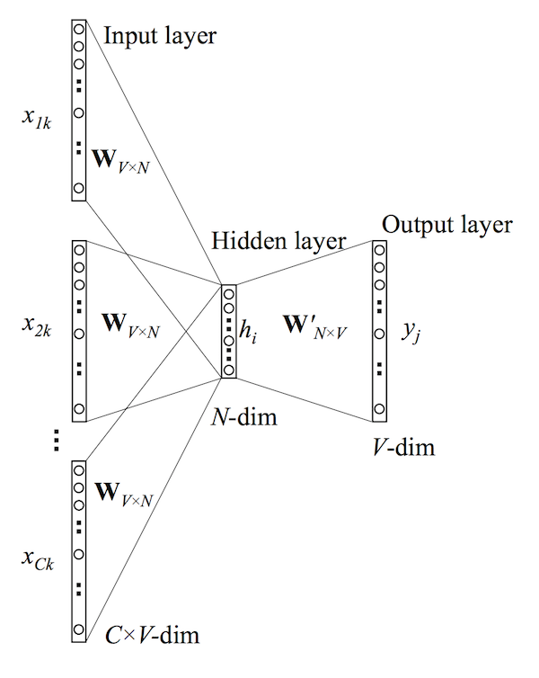

- on Mon 18 May 2015
Category: NLP Supervised Learning
In the previous post the concept of word vectors was explained as was the derivation of the skip-gram model. In this post we will explore the other Word2Vec model - the continuous bag-of-words (CBOW) model. If you understand the skip-gram model then the CBOW model should be quite straight-forward because in many ways they are mirror images of each other. For instance, if you look at the model diagram

it looks like the skip-gram model with the inputs and outputs reversed. The input layer consists of the one-hot encoded input context words \(\{\mathbf{x_1},...,\mathbf{x_C}\}\) for a word window of size \(C\) and vocabulary of size \(V\). The hidden layer is an N-dimensional vector \(\mathbf{h}\). Finally, the output layer is output word \(\mathbf{y}\) in the training example which is also one-hot encoded. The one-hot encoded input vectors are connected to the hidden layer via a \(V \times N\) weight matrix \(\mathbf{W}\) and the hidden layer is connected to the output layer via a \(N \times V\) wieght matrix \(\mathbf{W'}\).
Forward Propagation
We must first understand how the output is computed from the input (i.e. forward propagation). The following assumes that we know the input and output weight matrices (I will explain how these are actually learned in the next section). The first step is to evaluate the output of the hidden layer \(\mathbf{h}\). This is computed by
which is the average of the input vectors weighted by the matrix \(\mathbf{W}\). It is worth noting that this hidden layer output computation is one of the only differences between the continuous bag-of-words model and the skip-gram model (in terms of them being mirror images of course). Next we compute the inputs to each node in the output layer
where \(\mathbf{v'_{w_j}}\) is the \(j^{th}\) column of the output matrix \(\mathbf{W'}\). And finally we compute the output of the output layer. The output \(y_j\) is obtained by passing the input \(u_j\) throught the soft-max function.
Now that we know how forward propagation works we can learn the weight matrices \(\mathbf{W}\) and \(\mathbf{W'}\).
Learning the Weight Matrices with Backpropagation
In the process of learning the wieght matrices \(\mathbf{W}\) and \(\mathbf{W'}\), we begin with randomly initialized values. We then sequentially feed training examples into our model and observe the error which is some function of the difference between the expected output and the actual output. We then compute the gradient of this error with respect to the elements of both weight matrices and correct them in the direction of this gradient. This general optimization procedure is known as stochastic gradient descent (or sgd) but the method by which the gradients are derived is known as backpropagation.
The first step is to define the loss function. The objective is to maximize the conditional probability of the output word given the input context, therefore our loss function will be
Where \(j^*\) is the index of the the actual output word. The next step is to derive the update equation for the hidden-output layer weights \(\mathbf{W'}\), then derive the weights for the input-hidden layer weights \(\mathbf{W}\)
Updating the hidden-output layer weights
The first step is to compute the derivative of the loss function \(E\) with respect to the input to the \(j^{th}\) node in the output layer \(u_j\).
where \(t_j=1\) if \(j=j^*\) otherwise \(t_j=0\). This is simply the prediction error of node \(j\) in the output layer. Next we take the derivative of \(E\) with respect to the output weight \(w'_{ij}\) using the chain rule.
Now that we have the gradient with respect to an arbitrary output weight \(w'_{ij}\), we can define the stochastic gradient descent equation.
or
where \(\eta>0\) is the learning rate.
Updating the input-hidden layer weights
Now let's try to derive a similar update equation for the input weights \(w_{ij}\). The first step is to compute the derivative of \(E\) with respect to an arbitrary hidden node \(h_i\) (again using the chain rule).
where the sum is do to the fact that the hidden layer node \(h_i\) is connected to each node of the output layer and therefore each prediction error must be incorporated. The next step is to compute the derivative of \(E\) with respect to an arbitrary input weight \(w_{ki}\).
Where \(EH\) is an N-dimensional vector of elements \(\sum^V_{j=1} (y_j - t_j) \cdot w'_{ij}\) from \(i=1,...,N\). However, since the inputs \(\mathbf{x}\) are one-hot encoded, only one row of the \(N \times V\) matrix \(\frac{1}{C}(\mathbf{x} \cdot EH)\) will be nonzero. Thus the final stochastic gradient descent equation for the input weights is
where \(w_{I,c}\) is the \(c^{th}\) word in the input context.